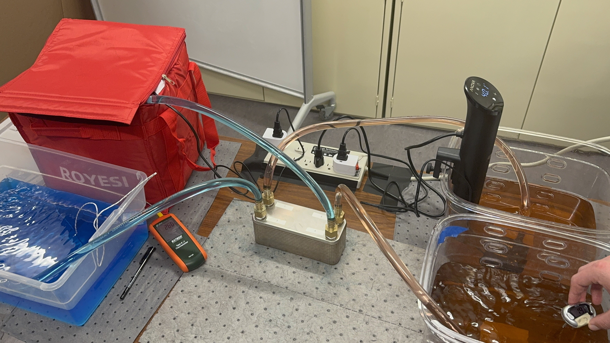
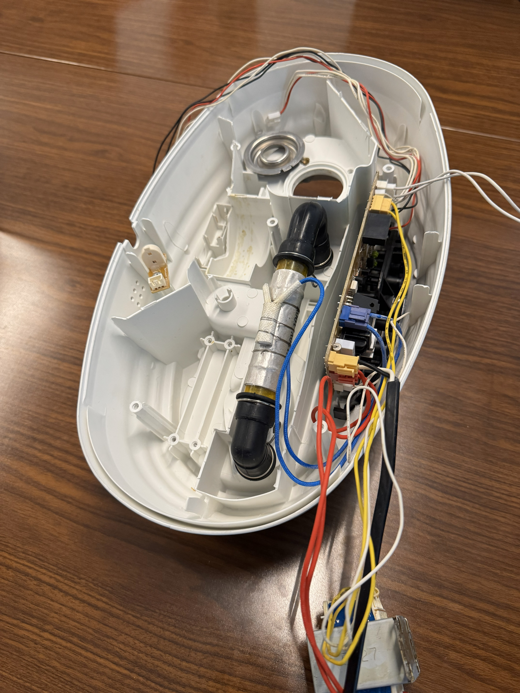

Automatic FAU Assembly
Due to product confidentiality, I have no pictures of this project, so please enjoy the following description of selected portions of my work for Corning Incorporated.
Overview
As a research and development intern under Dr. Jay Sutherland, I developed an automated lidless fiber optic array unit assembly machine. I built this system using Zaber linear actuators and pneumatics with custom drivers I programmed in Python that could interface with legacy lab equipment. The system gathered the optical fiber array, stripped its coating, aligned it with nano-scale grooves on a silica connector substrate, and applied a consistent stream of adhesive to close the system. I became proficient with precision engineering practices as well as automation system design. I also developed various G-Code and Python libraries for use in future projects of the lab. I familiarized myself with the PLC hardware available in the lab to automate this system, as well as developed my own automation programs that were capable of interfacing with the legacy automation controls systems. Upon my project completion, I wrote an extensive SOP for operating the automation table as well as various SOPs for lab equipment that had not been documented and presented my final project to a panel.
The high ownership environment that Dr. Sutherland provided me with allowed me to explore my own capabilities and intiatives in a professional working-lab environment. Aside from the technological skills I gained, I developed my skills in engineering and personal communication. Seeking help, providing help, and communicating engineering ideas are all skills that I had to develop to be successfull in this research and development environment.
Details
Role: Automation Design, System Integration
Tools: System Dynamics, Python Automation Programming, Pneumatics, Precision Engineering devices
Context: Corning Incorporated
Some unrelated images...

